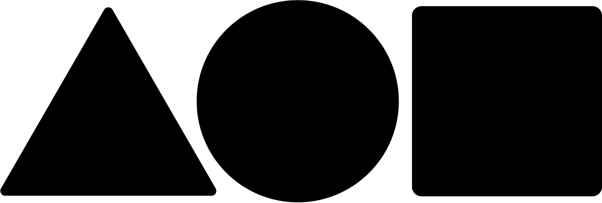

About
My name is Akbar Mohebbi and I was born in 1991 and I'm an Astro and Nightscape photographer Based in Tehran, Iran. I genuinely in love with photography and capturing pure moments. The night sky is always been one of my favourite genres and Nature is always a place for me to forget all the hardships of my life. Every time I go to the heart of nature, I start photographing landscapes. I really enjoy showing this beauty to others.
More about me...You can find my works on Foundation

Spring Way
Where flowers bloom so dope hope. - Lady Bird Johnson Spring is like a new beginning for me. spring means reviving everything. Nature takes on color again, flowers bloom and birds sing as if there is a celebration. Spring is a way for happiness and love.
ReserveMorning glory
Every sunrise gives you a new beginning and a new ending. Let this morning be a new beginning to a better relationship and a new ending to the bad memories. Its an opportunity to enjoy life, breathe freely, think and love. Be grateful for this beautiful morning and day.
Reserve

Land of light
Why is sunset more colorful than sunrise? It's an irony of life saying: 'sometimes, good things happen in goodbyes.'
Reserve